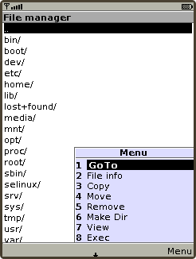
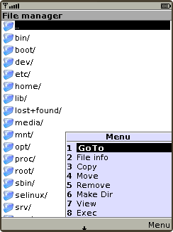

Set(list ... ) and Set(iconlist ... ) commands
This command used to create and manage lists which will be shown on the phone screen. This could be useful to manage player playlists or to browse directory structure. The iconlist can contain icons in front of each list item.
To see an example please take a look at cfg-data/Server-mode/exampleList.cfg file.
Format
Set(list,add|replace|clear|show|close, title, _list_or_menu_data_) or
Set(list,fg|bg|font|select, _data_)
Set(iconlist,add|replace|clear|show|close, title, _list_or_menu_data_) or
Set(iconlist,fg|bg|font|select, _data_)
 Usage
Set(list,add|replace ...)
Command Set(list,add|replace ...) used to add or replace content of the existing list.
1=Set(list,replace,Commands,uptime,whoami) 2=Set(list,add,SAME,reboot,poweroff) 3=ExecAndSet(list,add,SAME,cat /tmp/some_file.txt)
The word SAME can be used instead of title if there are no needs to change existing list title.
If Set(iconlist, ...) command is used, then each list item should be in form "icon_name:list_item_text":
1=Set(list,replace,Commands,question:uptime,ok:whoami)
Set(list,show)
Command Set(list,show) used to show existing list.
2=Set(list,show)
Set(list,clear)
Command Set(list,clear) used to clear existing list.
3=Set(list,clear)
Set(list,close)
Command Set(list,close) used to close existing list. If list is closed, then control (main) screen of the client will be shown.
Back($$)=Set(list,close)
Set(list,select ...)
Note: Supported in J2ME client only
Command Set(list,select,_index_) used to select in list item with specified index. Items numbering starts from 1.
4=Set(list,select,1)
Set(list,fg|bg ...)
Command Set(list,fg|bg,R,G,B) used to set foregroung or background colors, where values of R,G and B should be beetween 0 and 255.
5=Set(list,fg,255,255,255)
Set(list,font ...)
Command Set(list,font [,small | medium | large] [,bold] [,italic] [,underlined] [,system | monospace | proportional]) used to set font parameters. Java realization in the phone could support only some subset of fonts which can be specified by this command.
6=Set(list,font,medium,bold,proportinal)
Adding menu items
It is possible to add custom made menu by Set(menu ...) command. If user chooses ListItemX in list and then chooses MenuItemY in menu then reply MenuItemY(index_of_ListItemX_in_list,ListItemX) will be issued. According to the screenshot above the GoTo(1,..) command will be issued.
Additional
There are several things which needs to be pointed out:
List items numbering starts with 1.
All '\r' characters in results of execution of command ExecAndSet(list|iconlist,add|replace,_title_, ...) command will be replaced with comma (',') on the client's side. So, it is possible to show commas (,) inside list items.
If server does not issue Set(list,menu ...) command there will be automatically created default menu, which contains item "Back"
In any menu created with Set(list,menu ...) there anyway will be automatically created menu item "Back".
If user puches center joystick button then message Push(...) will be generated.
To handle events on server side it needs to use lines like:
MenuItemX($$)=Some_command
The list element value and the list element index will be substituted with the $(Param) and $(Index) variables:
Choose($$)=Exec(xmmsctrl track $(Index)) Choose($$)=Exec(kdialog --msgbox "Current track is $(Param)")
It is possible to overcome substitution of the $(Param) and $(Index) variables with explicit specification of event. For example if Choose(1,Reboot) event is send from the client, then two next lines will be equivalent and each of them will match that event.
Choose(1)=Exec(kdialog --msgbox \
"User choose REBOOT (match by index)")
Choose(Reboot)=Exec(kdialog --msgbox \
"User choose REBOOT (match by value)")
As it was written above, "Back" menu item is added automatically, but it is user responsibility to handle corresponding events on server side. In general it could be done like this:
Back($$)=Set(list,close)
Autoscrolling of long lines
Note: Supported in J2ME client only
If a list item is too long to be shown in full, it will be autoscrolled when it will be under cursor. It it possible to switch on/off autoscrolling by pressing "0" key at phone's keypad.
Using special keys
Note: Supported in J2ME client only
| Keypad | ||
|---|---|---|
| 1 Move to first item | 2 | 3 Page Up |
| 4 | 5 | 6 |
| 7 Move to last item | 8 | 9 Page Down |
| * | 0 Toggle autoscrolling | # |